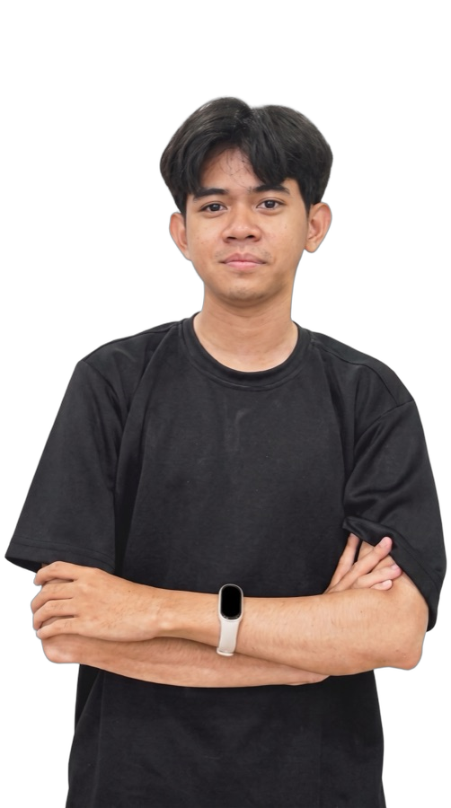

Travel information system — Laravel · MySQL · Tailwind CSS
A curious mind.A builder at heart.
I’m Andrea, a frontend engineer turning ideas and data into useful digital experiences.
A little about meA selection of my work
01 / SELECTED WORK
Ideas made real.
From a question to a working product.
A few things I’ve built along the way.
Accommodation decision support — PHP · MySQL · MAUT
Stock price prediction — Python · TensorFlow · LSTM
Alumni information system — PHP · MySQL · jQuery
Laptop selection system — PHP · MySQL · SMART

Andrea Micola AzwirDeveloper / Indonesia
02 / THE PERSON BEHIND THE WORK
Good work starts
with curiosity.
I like understanding how things work — then figuring out how to make them work better.
I’m a frontend engineer at Kurosim and a 2024 Informatics graduate from Malikussaleh University. My work sits between web development and data science: building interfaces, working with databases, and finding meaning in data.
From freelance projects to product teams, I care about the details that make an application feel clear and easy to use.
- Education
- Informatics, ’24
- GPA
- 3.74 / 4.00
- Based in
- Medan, ID
THE TOOLS I WORK WITH
Build
JavaScript · TypeScript · React · Next.js · React Native · HTML & CSS · Tailwind · PHP · Laravel · Flask · Node.js
Explore
Python · SQL · Pandas · Scikit-learn · PyTorch · HuggingFace · LSTM · Tableau
Collaborate
Git · GitHub · VS Code · MySQL · Jupyter · Google Colab
03 / THE JOURNEY
Learning by doing.
Different roles. New perspectives.
Something to take from every chapter.
May 2026 – Present Frontend EngineerKurosim
Frontend EngineerKurosim
- Building and maintaining frontend features across Kurosim's product suite, translating designs into responsive, accessible interfaces.
- Collaborating closely with product and backend teams to ship features end-to-end, from UI implementation to API integration.
- Focusing on code quality, performance, and consistent UI patterns across the codebase.
May 2025 – Apr 2026 Call Center StaffPT TUNAS CAHAYA MANDIRI WIDYATAMA
Call Center StaffPT TUNAS CAHAYA MANDIRI WIDYATAMA
- Monitored and managed trouble tickets from multiple tower providers (TBG, TIS/IBS, Persada Sokka, Smartfren) across Sumatra and Kalimantan, ensuring 100% SLA compliance from 2-hour emergency to 7-day minor cases.
- Coordinated field team responses across 5 regions via TOTI system, implementing systematic escalation from Supervisor to General Manager level with real-time GPS tracking.
- Maintained comprehensive evidence databases and reporting systems with 100% accuracy across Telkomsel, XL, Smartfren, and Indosat operators.
Dec 2023 – Present Freelance Web DeveloperFreelance
Freelance Web DeveloperFreelance
- Designed and built data-driven web solutions using modern technologies to optimize performance and accessibility.
- Collaborated directly with clients to understand needs, design intuitive interfaces, and ensure efficient data management.
- Delivered responsive, user-friendly web applications enhancing user experience across various contexts.
Nov 2024 – Mar 2025 Internal AuditPT GUNUNG SARI INDONESIA
Internal AuditPT GUNUNG SARI INDONESIA
- Supported the internal audit team in reviewing financial reports, ensuring compliance with applicable accounting standards.
- Conducted financial and non-financial data analysis to identify potential discrepancies and operational inefficiencies.
- Managed collection and validation of supporting documents including invoices, bank statements, and transaction records.
Apr 2024 – Jul 2024 Data AnalyticsCoursera · Google · Digitalent
Data AnalyticsCoursera · Google · Digitalent
- Performed data cleaning using spreadsheets, SQL, R, and Tableau to produce accurate, analysis-ready datasets.
- Designed and visualized data through interactive dashboards supporting effective data-driven decision-making.
- Mastered analytical tools like R and Tableau for optimal data management and visualization.
Aug 2022 – Dec 2022 Frontend EngineeringPT RUANG RAYA INDONESIA
Frontend EngineeringPT RUANG RAYA INDONESIA
- Applied Tailwind CSS, HTML5, JavaScript, and React.js to build responsive and efficient user interfaces in web development projects.
- Used OOP principles for structured application development and managed deployment through Git and GitHub.
- Utilized Node.js to build backend functionality supporting the effective and integrated operation of projects.
A LITTLE STRUCTURED LEARNING, TOO
2022Frontend EngineeringPT Ruang Raya Indonesia2023–24Google Data AnalyticsCoursera · Digitalent · Kominfo04 / NEXT CHAPTER
Have an idea, a question,
or something interesting in mind?